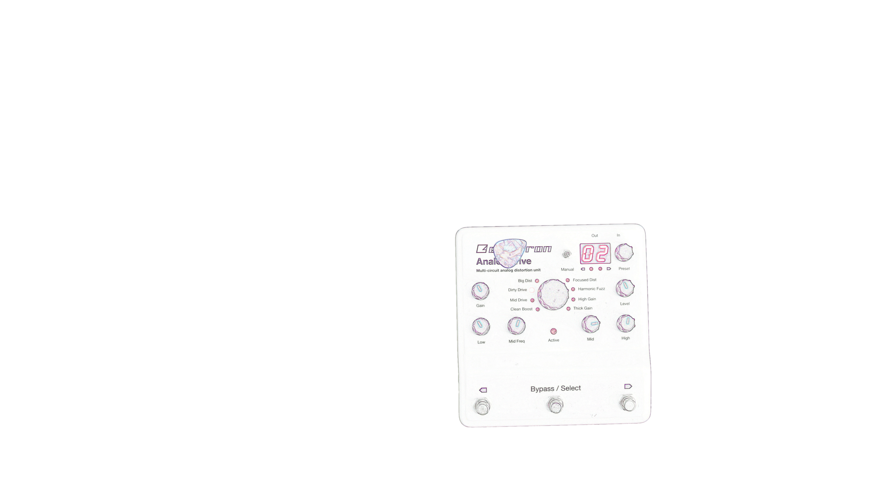
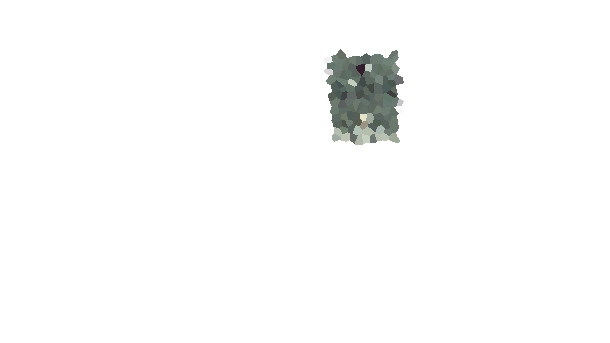
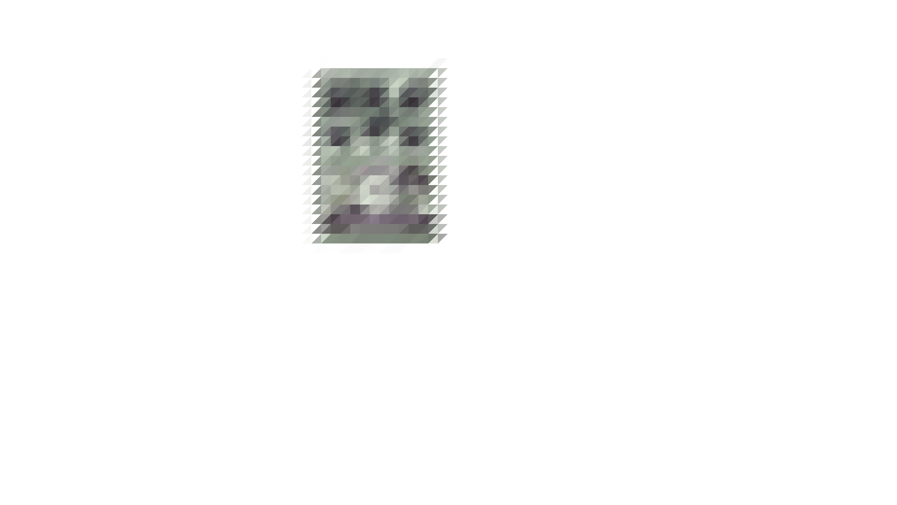
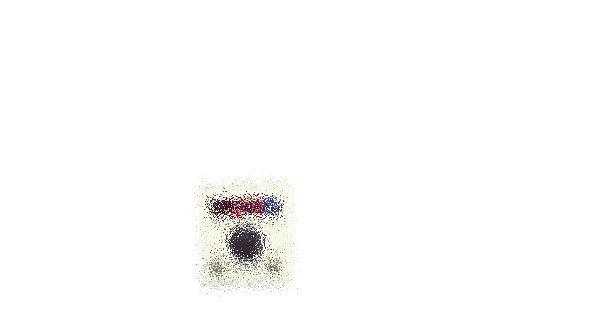
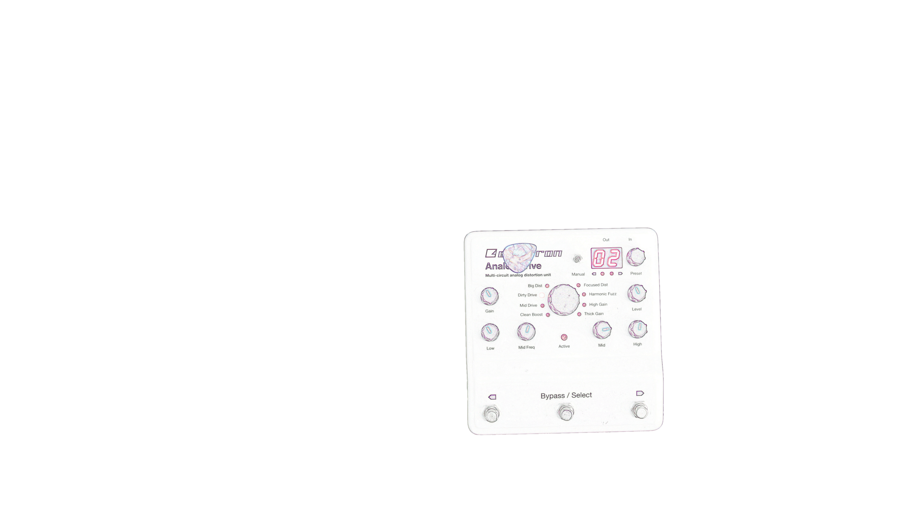
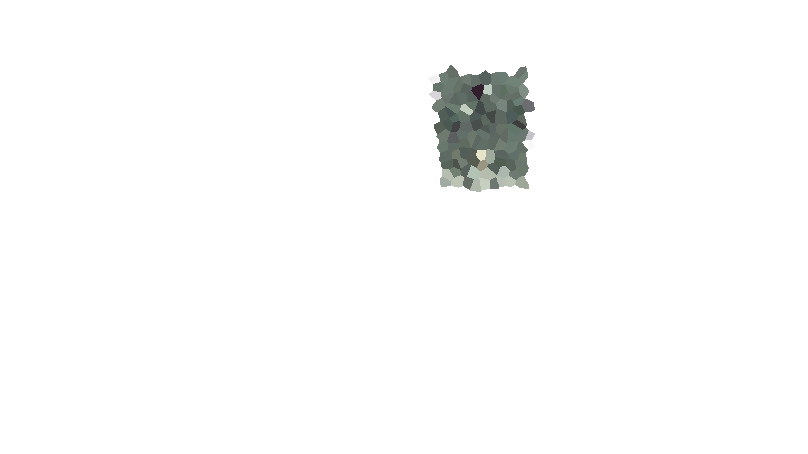
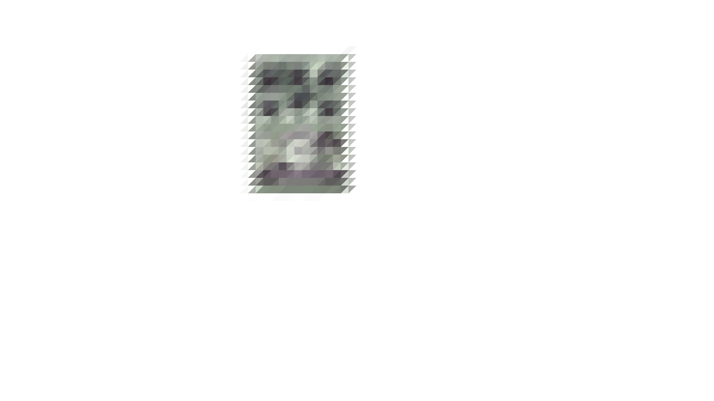
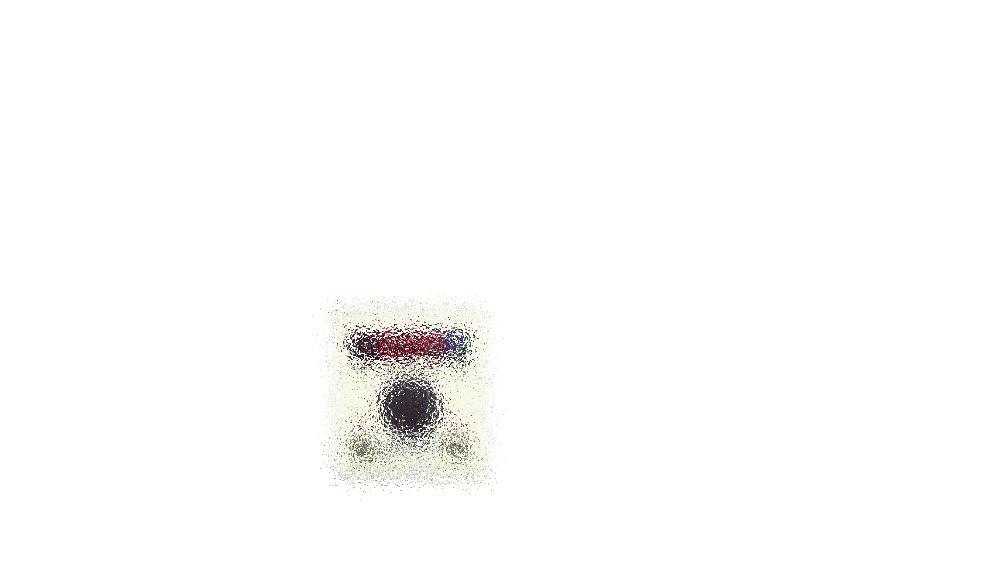

Interactive Pedalboard
Pressing below will begin a guitar loop for you to hear through each effect pedal. Click the effect names and have fun!
 







JHS Muffaletta
Classic Fuzz modeled after the Electro Harmonix Big Muff. This one has a voice selector to emulate different era's of the Big Muff circuit.
Now playing is their own JHS circuit.
Dr Scientist Reverberator
Boasting nine different reverb effects, you can go from the deepest, wettest recesses of space to a tone-enhancing small room.
Currently the mix knob is all the way up on a plate setting.
Elektron Analog Drive
Hosting eight analog drive circuits- classic overdrive to high gain distortion in one box with user presets.
Now playing is their version of a Rat distortion.
Eventide H9
Utilizing advanced digital algorithms, the H9 contains studio quality delay and modulation effects.
Now playing is the Vapor Trail setting- a long decaying reverb with modulation.
Stone Deaf Fig Fumb
Another Big Muff fuzz clone with Stone Deaf's paracentric filter eq and built in gate. The eq allows you to dial in forever-sustaining notes while the gate keeps your signal dead quiet when not playing.
Fulltone Supa Trem
Vintage 60's amp-like tremolo from the Fulltone Supa Trem using an Opto-1 photocell to control the trem rate. Variable rate switch and built in volume control with 15db clean boost.
Strymon Timeline
Timeline provides twelve studio-class, fully tweakable delay machines and 200 user presets.
Now playing is a preset using classic analog delay with a slow modulated chorus.
All sounds recorded using the actual pedals shown here along with a Fender Jaguar guitar and Orange Rocker amp.